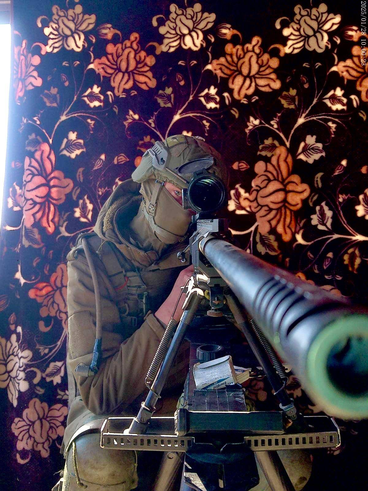
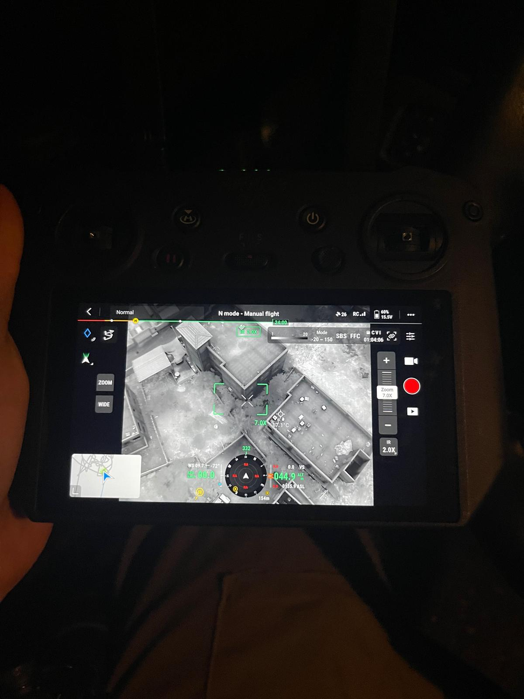
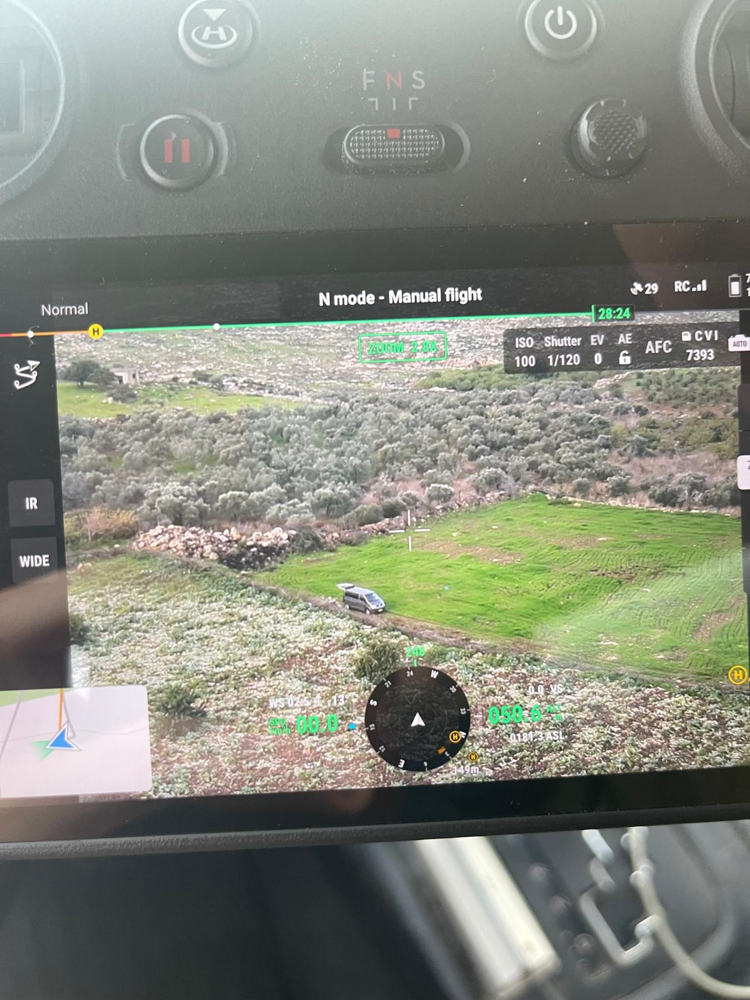

פרויקט גמר · 2026
המערכת שמחליטה מי טס לאן, ומעדכנת את עצמה תוך כדי טיסה.
← → / SPACE
פרויקט גמר · 2026
המערכת שמחליטה מי טס לאן, ומעדכנת את עצמה תוך כדי טיסה.
הצוות



שלושתנו שירתנו בסדיר, כל אחד בעולם אחר.
הרקע
בכל אחד מהתפקידים האלה ראינו רחפנים עובדים. לא בכיתה.




רחפן אחד, מפעיל אחד, תשומת לב מלאה. אף אחד לא תיאם עשרה בו זמנית.
הבעיה
מפעיל מסתדר עם 3-4 רחפנים. מעבר לזה, יותר מדי משתנה בבת אחת.
המחיר
הערכה להמחשה: שיבוץ לא אופטימלי מוסיף כ-15% זמן טיסה מיותר.
הרעיון
מהמערכת בנויה
במקום תוכנה אחת גדולה, שש קטנות. כל אחת יכולה ליפול ולקום לבד.
planning הוא המוח: הוא מחליט מי טס לאן.
הנתונים
המקום שבו כל שירות שומר את מה שהוא צריך לזכור.
אחד לא נוגע במידע של השני.
האילוצים
בזמן אמת
הסימולטור
טס, משדר תמונה, ומגיב בזמן אמת. בלי חומרה אמיתית.
הנראות
איפה כל רחפן, כמה סוללה נשארה, ובאיזו משימה הוא.
הענן
הכל רץ בענן של אמזון, ברשת פרטית וסגורה.
העלות
המנוף הוא הזמן, לא התעריף. כיבינו את הסביבה בסוף כל יום עבודה.
הפריסה
גרסה חדשה יוצאת בהדרגה, לא לכולם בבת אחת.
ניטור
כל שירות מדווח על עצמו. כשמשהו חורג, המערכת מתריעה לבד.
האתגרים
אבטחה
שלוש שכבות. מי שעבר אחת עדיין רחוק מהמידע.
כל שירות בודק בעצמו ולא סומך על השכן. גם הכניסה לענן היא זהות זמנית, בלי מפתחות שמורים.
אבטחה
סיכום
מאחורי הקלעים
SwarmOps
תודה. נשמח לשאלות.